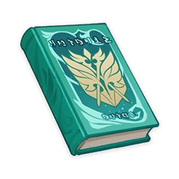

Mondstadt · Books & Literature
Knights of Favonius Handbook - 5th Edition
A quest-item handbook edited by Jean, setting out the Knights’ virtues, public-service rules, and detailed, often comic conduct policies.

A quest handbook edited by Jean
The Handbook is a quest item obtained during the World Quest Question and Answer. Its item description calls it a guide to the Knights’ rules and behavioral standards, credits Acting Grand Master Jean as editor, and says the Knights are expected to follow it. The text does not name a separate author or a disciplinary committee.
The book contains eleven numbered sections followed by terminology notes. It presents itself as an internal guide for serving Mondstadt’s people, not as an impartial history of the order or a comprehensive record of every Knight’s duties.
Three virtues connect freedom to duty
The opening identifies modesty, honesty, and self-control as the order’s core virtues. It treats them as the foundation that lets Mondstadt’s freedom endure: freedom requires members of the order to accept responsibilities in their work and conduct.
The appendix repeats that link while defining a Knight’s duty as serving Mondstadt’s people and protecting their freedom. This is the handbook’s own institutional ideal. Read it as the standard the text asks Knights to meet, not proof that every character always follows it.
Public service includes language and hospitality
The first section tells Knights to stay alert and help residents promptly. Other rules extend that service to visitors: greet traveling merchants courteously, ask for identity and destination without insults, and help travelers find useful businesses and services.
The handbook regulates phrasing as well as action. It contrasts a respectful welcome with hostile names and grandiose, confusing greetings, then instructs Knights to maintain courtesy with coworkers. The humor comes from the gap between ordinary conversation and a manual that tries to anticipate nearly every possible line.
Discipline, rest, and the Noelle rule
The third section says Knights should remain ready to help even during downtime. Its examples turn an abstract service rule into a joke about Knights trying to hand their unfinished work to Noelle: Jean has instructed Noelle to report that behavior, with reduced leave or salary deductions listed as possible penalties.
The fourth section regulates alcohol: Knights may not be drunk while on duty, may not encourage minors to drink, and underage Knights may not drink. The ninth section adds penalties for damage to public or private property, including solitary confinement instead of a fine for minors without a formal salary. Its unexpected inclusion of lake fish and other aquatic life as public property is another comic detail with an actual rule attached.
Security rules reflect Mondstadt’s threats
Section Five is marked New and responds to increased Fatui activity in the city by restricting disclosure of the Knights’ operations and strategic deployments while off duty. Section Ten tells Knights to explain the rules to outsiders and calls for extra scrutiny of concerning visiting diplomats. The appendix separately describes the Fatui and Abyss Order as groups to report to headquarters.
The handbook also addresses emergencies and wind gliders. It expects Knights to protect lives and property, communicate calmly, guide the public toward safety, check glider licenses, and intervene in illegal aerial activity. These provisions make the manual a mixture of serious security policy, public-facing conduct, and Mondstadt’s recurring glider jokes.
An edition-specific snapshot of the order
Several entries marked New preserve context from the handbook’s own time: Fatui activity has increased, Varka is away from Mondstadt, and Dvalin now shelters in Stormterror’s Lair. The sixth section’s reassurance about the Grand Master’s absence is explicitly limited to periods when he is away. These are details in the fifth edition, not a current description of Varka’s status after his return.
The appendix adds a note that some Knights and Church members appear not to believe in Barbatos, which gives the book an imperfectly bureaucratic voice rather than presenting a unanimous faith. Taken together, the rules show what the editor wants the order to say and do: protect residents, welcome travelers, keep sensitive information secure, and make civic freedom compatible with discipline.
This is an original CoreGG reading guide, not an official HoYoverse article or a reproduction of the game text. Source links below identify the records used so you can check the original context.
Sources & references
Check these sources for the original game text and reference trail.